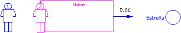
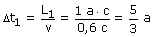
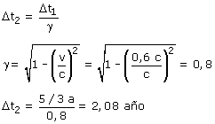

|  Observador 1 (Tierra):  Observador 2 (Nave) Aplicando la conversión de tiempos:  Está mal hecho... El tiempo que tarda la nave en ir de la Tierra a la estrella medido por el observador 1 no es propio porque la posición de la nave no es la misma al principio que al final. Como Δt1 no es propio no se puede aplicar la fórmula de conversión de tiempos para saber Δt2 |